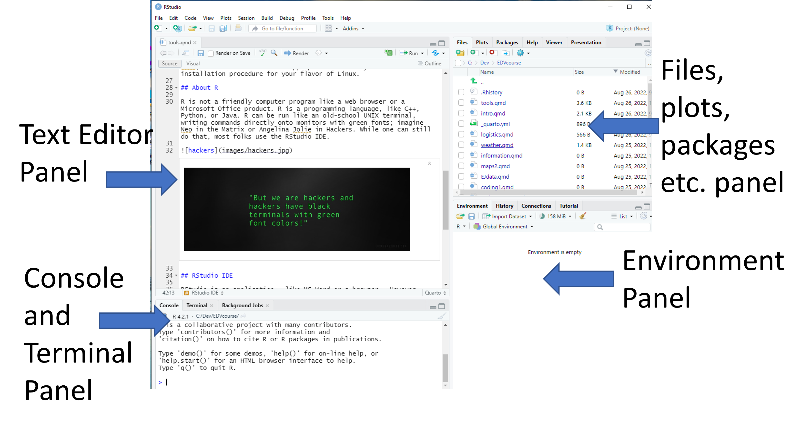
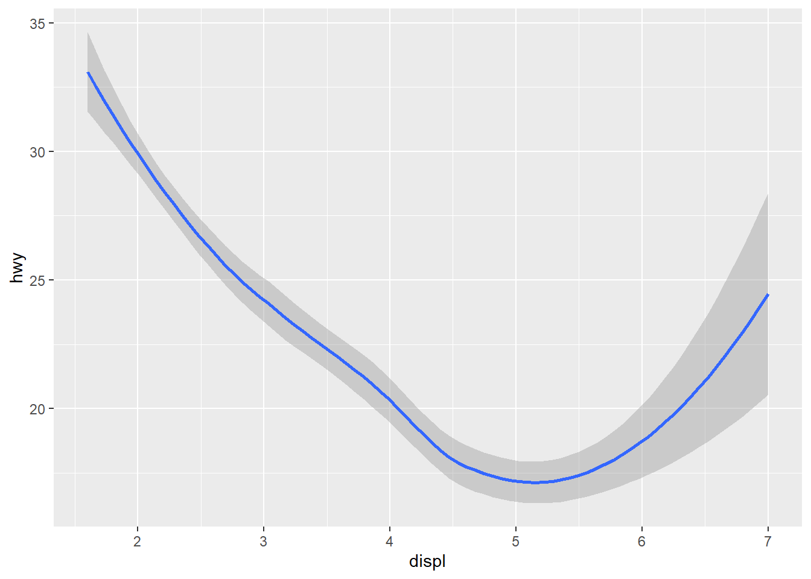
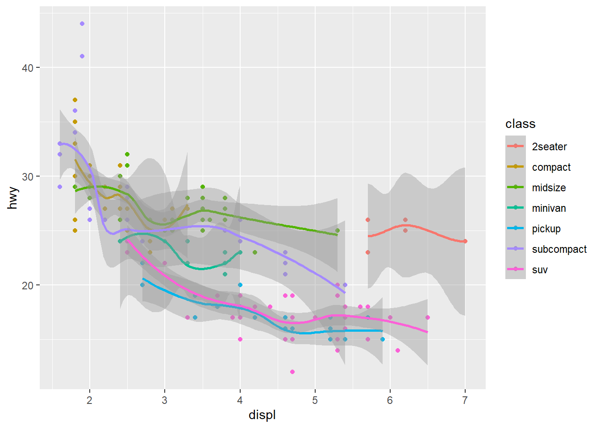
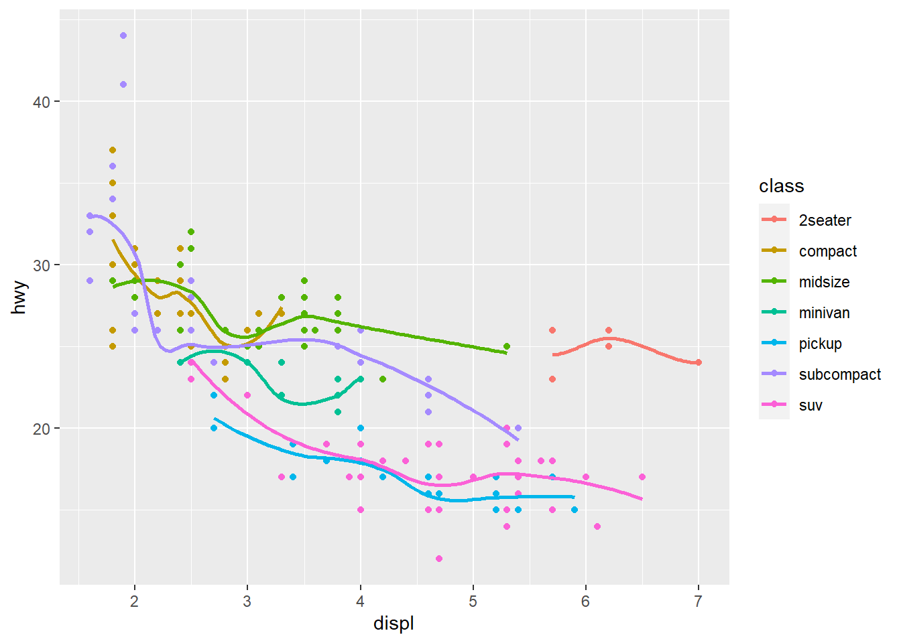
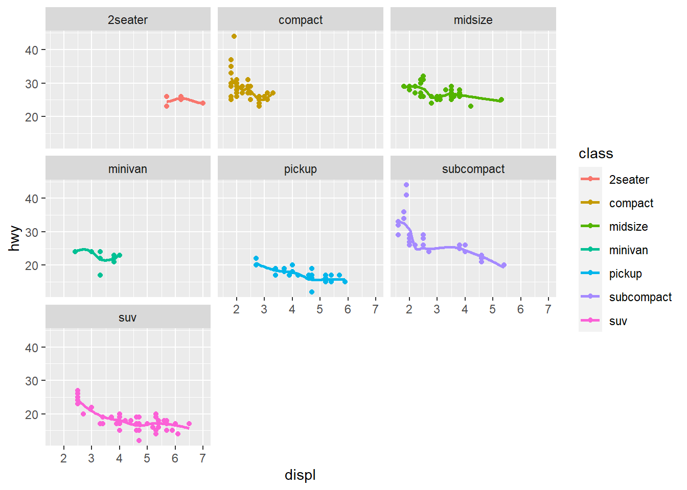
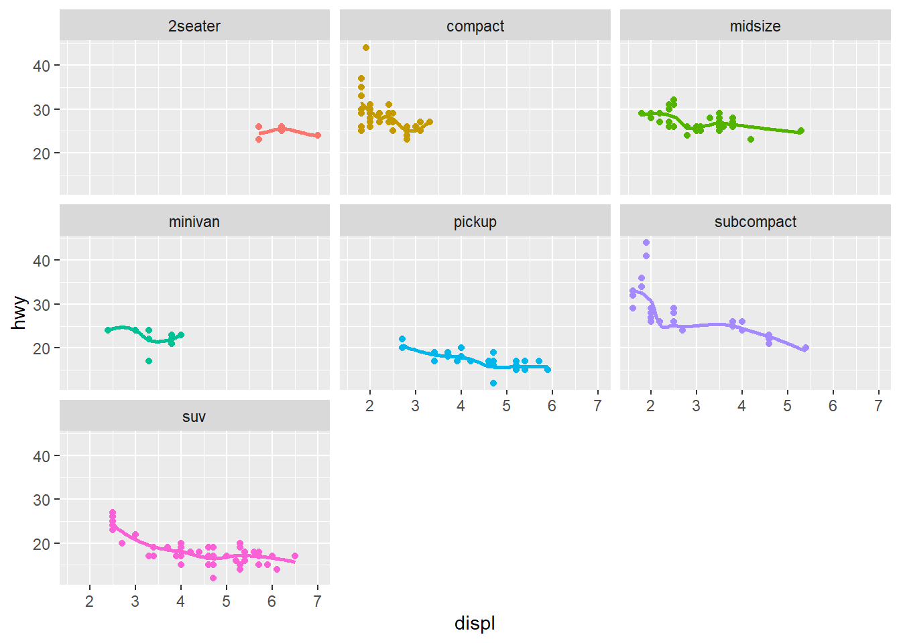
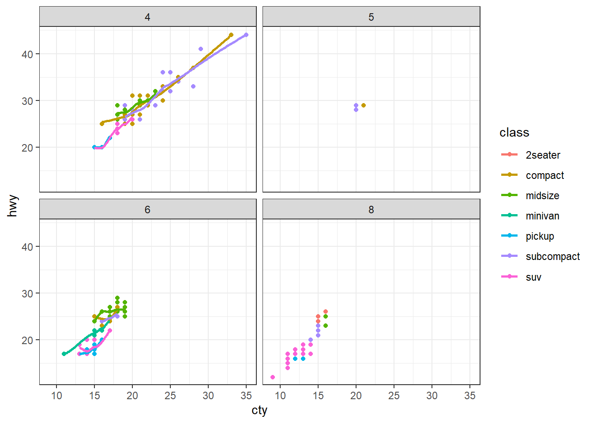

install.packages('tidyverse')2 Coding in R - Basics
Today we will be focusing on the practice of data visualization.
Visualization is a great place to start with R programming, because the payoff is relatively immediate. You get to make informative and potentially elegant visualizations to help you understand data.
The Tidyverse framework for visualization is shown in Figure 12.1

2.1 Overview
- Step 0 - Install R and RStudio
-
Step 1 - Open RStudio
A. Put in a header comment - who, when, what, where
B. Install key packages
C. Load key packages
-
Step 2 - Acquire and/or Load Data
A. Identify thepathto the data
B. Identify the data format
C. Choose the right function to load the data - go to Step 1B and 1C again as needed D. Write code to import the data
E. Run the code to import the data- Check for Error messages and warning messages in console; if failure, go back to Step 2D
- Check to make sure data is loaded (look in
Environmentwindow)
F. Step 2F - Look at the data - did it import correctly
- Check column headers
- Check data types
G. Repeat Step 2 as needed for any other data required for visualization
- Check for Error messages and warning messages in console; if failure, go back to Step 2D
- Step 3 - Tidy the data Advanced data science
-
Step 4 - Visualize the data
A. Choose the visualization type
B. Choose the right functions
C. Write code to do a basic visualization
D. Add code to improve the visualization (repeat as needed)
E. Annotate labels, axes, points, legends
F. Export or publish the visualization
- Step 5 - Communicate with your audience using the visualization A. Get feedback from audience B. Revise visualization (Step 4D as needed) to improve for intended audience
2.2 Example 1 - mpg dataset
2.2.1 Step 1 - Open RStudio; install and load packages
2.2.1.1 A. Open RStudio
knitr::include_graphics('https://www.macupdate.com/images/icons512/50318.png') 
Note
Opening RStudio loads R.
Opening R will not load RStudio.
Figure 2.2 shows an annotated image of RStudio with the four panels labeled. In the default layout, the top-left is the text editor panel, the bottom-left is the console panel, the top-right is the files, plots, and packages panel, and the bottom-right is the environment panel.

- Text Editor Panel - This is where you can enter code and have the editor color code it.
- Console Panel - This is where errors and warnings appear when you run code. It can also be used to do direct coding, which I don’t recommend for beginners.
- Files, plots, and packages panels - This is where files loaded in the working directory and packages in the default R directory are organized.
- Environment Panel - This is where data and variables you define in your coding will be organized
2.2.1.2 Add a Header
It is good coding practice to put a basic header on your script.
Go to the text editor and type #. Any line in an R script that starts with # is a comment and is not executable code. Lines starting with # will have a unique color.
I usually add:
- Name of project
- Author(s) of project
- Month and Year created
- Month and Year last modified
2.2.1.3 Install and load packages
Type the following code into the text editor. This will download and install the tidyverse package onto your machine. Note that installing packages requires the package name in quotes.
Packages only need to be installed once.
Once that has completed, you will need to load the library using the library() function. In this call, the package name does not need to be quoted. Every time you open a session where you want to use a package, you need to run this code to load the package.
The current libraries loaded can be founded in the file manager panel under the Packages tab.
2.2.2 Step 2 - Acquire and/or Load Data
In this case we’re going go to do SUPER EZ mode. Acquiring and loading data has lots of detail oriented stuff, that we’re going to skip today to get to the fun stuff. We’ll jump into acquiring data and loading data on Friday.
The mpg dataset is an example dataset included in the tidyverse package. No loading required.
We can look at the first ten rows of the dataset by typing mpg and running that line of code.
mpg# A tibble: 234 × 11
manufacturer model displ year cyl trans drv cty hwy fl class
<chr> <chr> <dbl> <int> <int> <chr> <chr> <int> <int> <chr> <chr>
1 audi a4 1.8 1999 4 auto… f 18 29 p comp…
2 audi a4 1.8 1999 4 manu… f 21 29 p comp…
3 audi a4 2 2008 4 manu… f 20 31 p comp…
4 audi a4 2 2008 4 auto… f 21 30 p comp…
5 audi a4 2.8 1999 6 auto… f 16 26 p comp…
6 audi a4 2.8 1999 6 manu… f 18 26 p comp…
7 audi a4 3.1 2008 6 auto… f 18 27 p comp…
8 audi a4 quattro 1.8 1999 4 manu… 4 18 26 p comp…
9 audi a4 quattro 1.8 1999 4 auto… 4 16 25 p comp…
10 audi a4 quattro 2 2008 4 manu… 4 20 28 p comp…
# ℹ 224 more rowsThere are some key categorical variables (manufacturer, model, trans, cyl, class, year, drv) and others that are continuous variables (cty, hwy). As you may be able to guess, this data shows automobile average fuel efficiency in units of miles per gallon. We will using this dataset to showcase the grammar of graphical visualization in R.
2.2.3 Step 3. Tidy the Data
This dataset is already reasonably tidy and so this step is not necessary for this example dataset. No munging is required.
2.2.4 Step 4. Visualize the Data
The package ggplot is the most common graphics package within the tidyverse framework. It is extremely versatile, but requires an understanding of the grammar of graphics. ggplot is loaded as part of the tidyverse package.
2.2.4.1 Choose the visualization type
We’ll be exploring point, line, and smoothed visualization types - geom_point, geom_line, ’geom_smooth`. In point plots, the individual data are shown as points. In line plots, individual points are connected by lines. In a smoothed plot, the points are usually shown with a curve attempting to fit the data to a model.
There are many more types of visualizations (text, histogram, box, bar, heatmaps, density, jitter, polygons, maps, quantiles, rasters, and violins) available, and we’ll explore the grammar for interesting ones in future classes.
2.2.4.2 Choose the visualization function
We’ll apply ggplot() for every visualization for now, and add at least one geom function. We will then combine them to make fancier visualizations with overlays.
2.2.4.3 Write the code to do a basic visualization
Coding in the R tidyverse is a lot like writing a sentence, just in a foreign language that puts things in an order that may not be familiar.
- Add a verb or two for an action - usually this is the function.
- Add an object to apply the action to - this is usually the dataframe, but can be a list or another type of data object.
- Add adjectives and adverbs to modify the action or the object
Figure 2.3 shows a very basic visualization.
ggplot(data = mpg) +
geom_point(aes(x = displ, y = hwy))
This is a basic point plot. The x-axis shows engine displacement (Liters) for gasoline vehicles, and the y-axis shows highway driving fuel efficiency in miles per gallon.
Three functions were used.
-
ggplot()- make a figure usingmpgas the dataset
-
geom_point()- shows the data as points
-
aes()- aes is an abbreviation for aesthetics; map these variables for display
In the abstract, a code template for a basic graph is:
ggplot(data = <DATA>) +
<GEOM_FUNCTION>(mapping = aes(<MAPPINGS>))Figure 2.4 shows a basic line plot using geom_line instead of points. It is a visual abomination for this dataset. We’ll show why below.
Figure 2.5 shows a smoothed line fit with geom_smooth.
ggplot(data = mpg) +
geom_smooth(aes(x = displ, y = hwy))
2.2.4.4 Improve the Visualization
The basic visualization is in need of some improvement. First, let’s explore how the dataset looks by adding the aesthetics of color, then shape.
Figure 2.6 shows the geom_point() plot with vehicle class in different colors. We do this by defining the category color = class within the aes().
ggplot(data = mpg) +
geom_point(aes(x = displ, y = hwy, color = class))
Interesting! The 2seater vehicle class gets better fuel efficiency then the SUV and pickups with similar displacement - likely because they are smaller. I also see that the subcompact and compact vehicle classes have the smallest engine displacement which is correlated with better fuel efficiency.
Figure 2.7 uses a shape aesthetic instead of color.
ggplot(data = mpg) +
geom_point(aes(x = displ, y = hwy, shape = class))Warning: The shape palette can deal with a maximum of 6 discrete values because
more than 6 becomes difficult to discriminate; you have 7. Consider
specifying shapes manually if you must have them.Warning: Removed 62 rows containing missing values (`geom_point()`).
Notice anything missing? Our SUV class is gone because ggplot defaults to only allowing six individual shapes at a time. We can override this default.
The last new thing I want to show is a facet_wrap() which will make this visualization much easier to interpret on a class basis. Figure 2.8 shows how this works on our basic visualization by adding a line to our basic visualization.
ggplot(data = mpg) +
geom_point(aes(x = displ, y = hwy)) +
facet_wrap(~class)
This helps us to better identify the individual classes of vehicles and understand the range of data available for each type of automobile.
2.2.5 Putting It Together
The previous section shows examples for individual changes to our basic visualization. In this section, I’ll show you how easy it is to combine those lines.
2.2.5.1 Example 1: Points and smooth
Figure 2.9 shows a geom_point and geom_smooth overlaid on each other. We’ve also moved the aes function into the ggplot but could have put in both the geom_point and geom_smooth instead.
ggplot(data = mpg, aes(x = displ, y = hwy)) +
geom_point() +
geom_smooth()`geom_smooth()` using method = 'loess' and formula = 'y ~ x'
2.2.5.2 Example 2: Points, color, and smooth
Figure 2.10 shows a geom_point and geom_smooth overlaid on each other but we’ve added the color for vehicle class as well. Unfortunately, the standard error on the smooth function is detracting from the graphic. Figure 2.11 removes that by specifying se = FALSE to the geom_smooth function and it makes the visualization much cleaner.
ggplot(data = mpg, aes(x = displ, y = hwy, color = class)) +
geom_point() +
geom_smooth()
ggplot(data = mpg, aes(x = displ, y = hwy, color = class)) +
geom_point() +
geom_smooth(se = FALSE)
2.2.5.3 Example 3: Points, color, smooth, and facet
This last example will put it all together.
Figure 2.12 shows a geom_point, geom_smooth, and facet_wrap overlaid on each other with the color for vehicle class as well. This figure combines most of what we’ve explored today in one figure. But we don’t need that legend if we already define each class separately!
In Figure 2.13 I remove the legend to make a final figure. This involves a function called theme() which specifies a lot of the meta components of a figure like fonts, legends, and the default look and feel of the figure. Here, I added a line of code that specifies theme(legend.position = 'none') to remove that redundant legend.
ggplot(data = mpg, aes(x = displ, y = hwy, color = class)) +
geom_point() +
geom_smooth(se = FALSE)+
facet_wrap(~class)
ggplot(data = mpg, aes(x = displ, y = hwy, color = class)) +
geom_point() +
geom_smooth(se = FALSE)+
facet_wrap(~class) +
theme(legend.position = 'none')
2.2.6 In-Class Exercises
- Create a point visualization with cty on the x-axis and hwy on the y-axis.
- Fit that relationship by adding a
geom_smooth() - Improve that visualization by adding class as a color class
- Improve that visualization by adding a
facet_wrapby a categorical variable of your choice
Figure 2.14 shows the city-highway fuel efficiency relationship colored by class and faceted by cyl with the ugly gray background removed using theme_bw().
